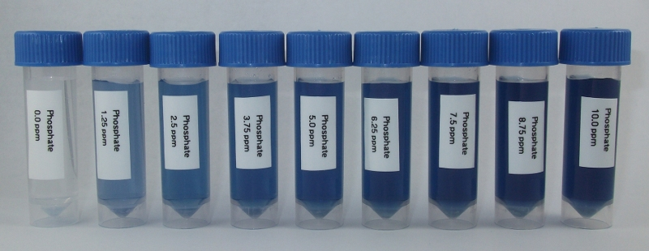

Ascorbic Acid Method¶

Ammonium molybdate and potassium antimonyl tartrate react in acid medium with orthophosphate to form a heteropoly acid - phosphomolybdic acid - that is reduced to intensely colored molybdenum blue by ascorbic acid. This method for measuring phosphate is based on APHA Standard Method 4500-P E
Reagents and Equipment¶
- Assembled colorimeter
- Cuvettes
- 5 mL screw capped tubes
- Sulfuric acid, (14% v/v), Labchem, Cat # LC256002
- Potassium antimonyl tartrate solution, Labchem, Cat # LC187201
- Ammonium molybdate solution (4%), Labchem, Cat # LC112101
- Ascorbic acid, Labchem, Cat # LC115309
- 1mL adjustable micropipette
- Distilled water. Optional, for diluting water sample
Colorimeter set-up¶
- Wavelength: 625 nm. Use Red led (colorimeter RGB board).
- Phosphate standard data: download a data file or prepare your own phosphate standard data
- Before measuring samples, calibrate the colorimeter against water or a distilled water sample developed with ascorbic acid reagent as described below
Method¶
Step 1: Prepare fresh ascorbic acid reagent¶
In a beaker dissolve 0.88 g of ascorbic acid in 50 mL distilled water;
- In a separate beaker add the reagents in the following order:
- 25 mL sulfuric acid solution;
- 2.5 mL potassium antimonyl tartrate solution;
- 7.5 mL ammonium molybdate solution;
- 15 mL ascorbic acid solution (prepared in step 1);
Mix the ascorbic acid reagent. The reagent is stable for 4 hours.
Step 2: Sample testing¶
- Fill an empty sample bottle to the 5 mL line with your water sample
- Add 800 µL of test reagent solution, cap and invert several times to mix
- Note the time since adding the reagent to your water sample. When it has been at least 5-10 minutes, pour some of your sample into a cuvette, place in the colorimeter and click measure.The program will return the phosphate concentration in ppm.